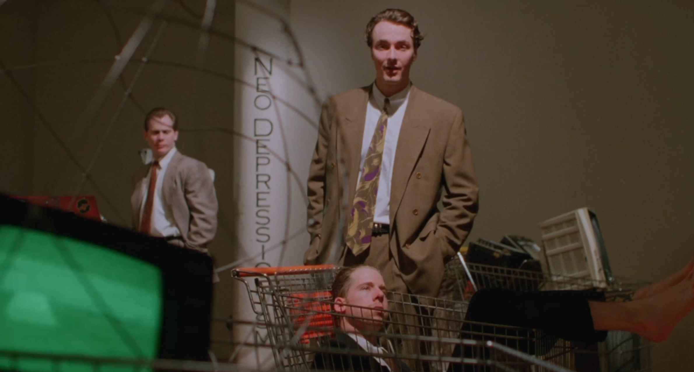
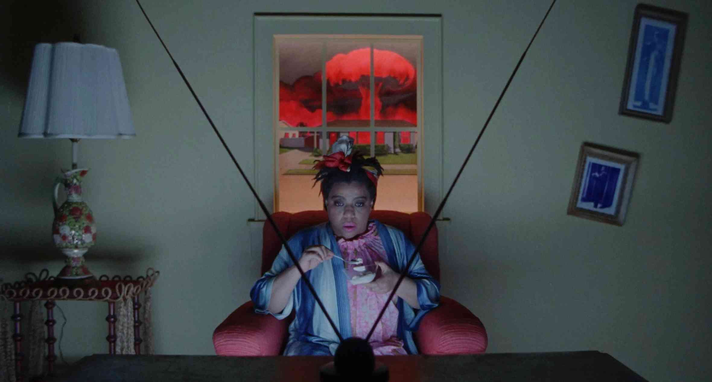
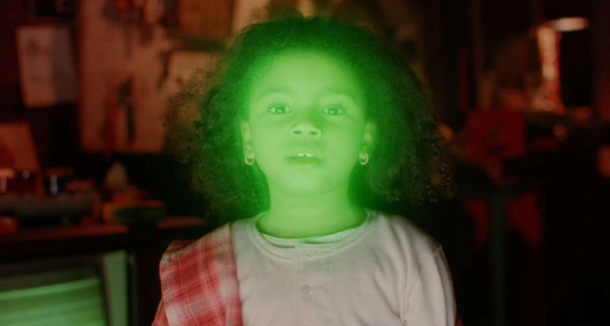

FRESH KILL is billed as an avant-anarcho ecosatire, in which a lesbian couple living on Staten Island find themselves ensnared in a vast conspiracy involving a ghost ship of nuclear refuse, ominous television commercials, and deadly cat food. Envisioning New York City as a toxic waste dump of consumerist detritus, FRESH KILL offers a bracing, queer feminist response to the patriarchal poison of corporate capitalism.
Criterion Channel, 2022
Shu Lea Cheang is an artist and filmmaker who engages in genre bending gender hacking art practices. Celebrated as a net art pioneer with BRANDON (1998 - 99), the first web art commissioned and collected by Guggenheim Museum, New York, Cheang represented Taiwan with mixed media installation, 3x3x6, at Venice Biennale 2019. Crafting her own genre of Scifi New Queer Cinema, she has made 4 feature films, FRESH KILL(1994), I.K.U. (2000), FLUIDø (2017) and UKI (2023). In 2023, she toured UKI with screenings at LAS Art Foundation (Berlin), Centre Pompidou (Paris) , MoMA (New York) and ICA (London) among other venues. In 2024, she receives the LG Guggenheim Art and Technology Award. She is currently at work for two major shows in 2025 - HAGAY DREAMING, a theatre performance for Tate Modern and a survey show at Haus der Kunst in Munich.



Technospaces on film captures the blur and the background of the already and soon-to-be obsolete technologies abutting and intruding into our lives. Together we will watch films and moving image works that examine different aspects of the affective and extractive behaviours inherent in our digital interactions to reflect on the 'real' costs of these choices. The film screening hopes to provide an expressive glance back into the ways contemporary artists and independent filmmakers in particular have worked with, critiqued and subverted digital tools/spaces and our relationships to them.
This screening is programmed with: Video Home System (Sharlene Bamboat, 2018)